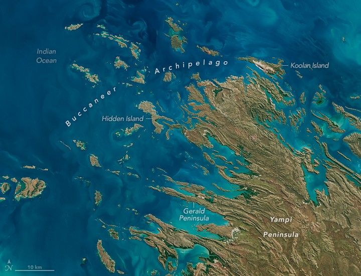

Buccaneer Archipelago
In the sparsely populated Kimberley region of Western Australia, jagged landforms reach like fingers into the turquoise-blue ocean waters. Along the coastline north of Derby, they used to extend even farther. Rising sea levels have submerged part of the coastal landscape, giving rise to hundreds of islands and low-lying reefs that make up the Buccaneer Archipelago.
The OLI-2 (Operational Land Imager) on Landsat 9 captured this image of the archipelago on June 11, 2025. The scene shows the striking interactions between land and water where King Sound opens to the Indian Ocean.
Water whips around the islands with the ebb and flow of the tides. When this image was taken at around 9:50 a.m. local time (01:50 Universal Time), the water had recently passed the day’s first low tide (2.54 meters) and was several hours away from high tide (10.61 meters). The islands lie along a part of the Kimberley coast known for extreme tidal ranges, which can approach 12 meters.
Powerful tidal currents stir up sediment in shallow areas, producing the beautiful turquoise swirls visible in the image. These currents can also be hazardous to seafarers and divers. One notorious area, “Hell’s Gate”, lies in the passage between Gerald Peninsula and Muddle Islands.
Coastal areas are equally striking, featuring green mangrove estuaries and bright sandy beaches. For example, Silica Beach (Ngalangalangarr) on Hidden Island’s north side is named for its bright white grains of silica quartzite. Development is limited, though mining and related infrastructure, including airstrips, are visible on Koolan Island and nearby Cockatoo Island.
Although sparsely populated, Aboriginal people have lived in the region for thousands of years and continue to maintain a strong connection with their traditional lands. For instance, three marine parks established in 2022—Mayala, Bardi Jawi Gaarra, and Lalang-gaddam—were the first in Western Australia to be co-designed and jointly vested with Traditional Owners.